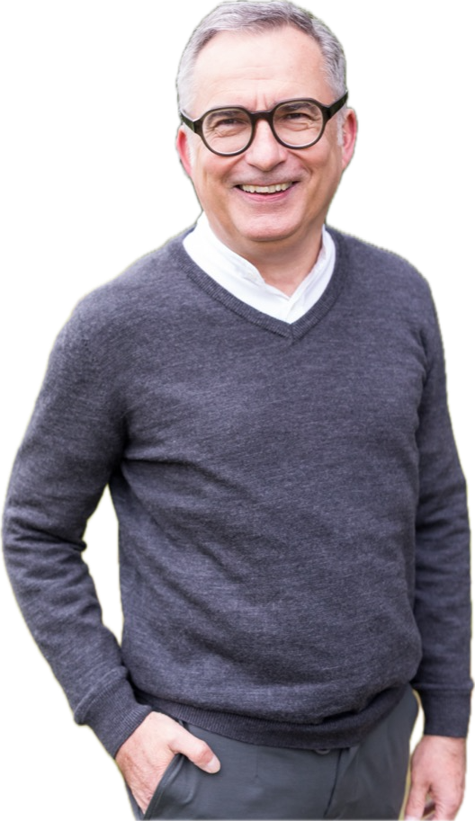
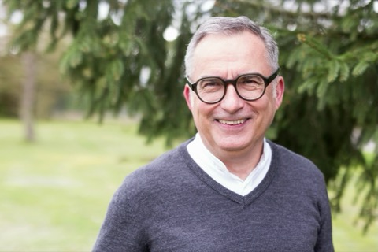
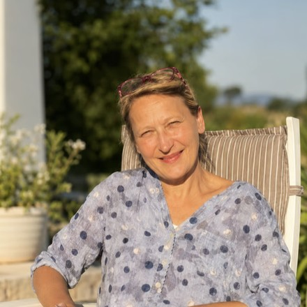
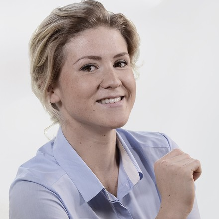

Mut.Ideen.Wirkung
Drei Worte, die auf den ersten Blick nach Gründung, Start-up und Businessplan klingen. Aber eigentlich geht es um viel mehr: Entrepreneurship ist nicht zuerst eine Methode – es ist eine Haltung.
0:009:21
Das persönliche 1:1-Mentoring für Unternehmer mit Michael Deck.
Sie haben viel aufgebaut. Jetzt geht es um das Wesentliche: Ihre Berufung mit Ihrer unternehmerischen Verantwortung verbinden – und eine Zukunft gestalten, die messbare Wirkung entfaltet.

Klarheit, Perspektive, Wirkung.
Sie wissen wieder, wofür Sie stehen. Ihre persönliche Berufung und Ihr Unternehmen ziehen an einem Strang – statt sich auszubremsen.
Aus Klarheit entsteht eine tragfähige Zukunftsperspektive: ein Bild davon, wohin Ihr Unternehmen geht – und warum das für Sie stimmig ist.
Aus der Perspektive werden Entscheidungen und Geschäftsmodelle, die messbaren Nutzen stiften – für Sie, Ihr Team und die Menschen, die Sie erreichen.
Viele Unternehmer haben viel aufgebaut – und spüren doch irgendwann, dass etwas Wesentliches fehlt.
Der Kalender ist voll, die Zahlen stimmen vielleicht sogar – aber die innere Klarheit ist unterwegs verloren gegangen. Entscheidungen kosten mehr Kraft als früher. Das „Warum" ist leiser geworden.
Sie merken: Es geht nicht um noch eine Strategie, noch ein Tool, noch mehr Tempo. Es geht darum, den Blick wieder auf das Wesentliche zu richten – und von dort aus zu handeln.
Genau hier setzt Wirkung aus Klarheit an: ein vertraulicher Raum, in dem zuerst der Mensch und seine Berufung stehen – und die Zukunft des Unternehmens daraus wächst.
Zuerst der Mensch und seine Berufung. Die Zukunftsperspektive und die Umsetzung folgen als logische nächste Schritte – nie umgekehrt.
In vertraulichen Unternehmergesprächen verbinden wir Ihre persönliche Berufung mit Ihrer unternehmerischen Verantwortung – und schärfen den Blick für das, was wirklich zählt.
Aus der gewonnenen Klarheit entwickeln wir eine klare Perspektive und Geschäftsmodelle, die zu Ihnen und Ihrem Unternehmen passen – tragfähig und werteorientiert.
Wir übersetzen die Perspektive in konkrete Schritte. Wo Künstliche Intelligenz wirklich entlastet, begleiten wir die Umsetzung – bis aus der Idee ein System wird, das Nutzen stiftet.
Ein klares Bild davon, wofür Sie und Ihr Unternehmen stehen – als Grundlage für jede Entscheidung.
Ihr persönliches Warum und Ihre unternehmerische Verantwortung ziehen wieder in dieselbe Richtung.
Eine Richtung, die stimmig ist – kein Trend-Getriebe, sondern ein Weg, der zu Ihnen passt.
Ein vertraulicher Sparringspartner hilft, festgefahrene Themen zu bewegen und Entscheidungen zu treffen.
Wir prüfen nüchtern, wo Künstliche Intelligenz Sie entlastet – und wo nicht. Kein Selbstzweck.
Aus Klarheit werden Schritte, die im Alltag ankommen – für Sie, Ihr Team und Ihre Kunden.
Vom Wünschenswerten zum Planbaren.
Klarheit beginnt nicht mit Antworten, sondern mit den richtigen Fragen – solchen, die Sie über die gewohnten Grenzen Ihres Denkens hinausführen und echte Selbstreflexion auslösen.
Nicht die schnellen Alltagsfragen, sondern die, die tiefer auf Ihre Werte, Ziele und Ihr Wachstum zielen.
Fragen, auf die Sie heute noch keine Antwort haben – gerade sie öffnen neue Perspektiven.
Fragen, deren Beantwortung Ihr Bewusstsein weitet und spürbare Veränderung anstößt.
Statt sich früh festzulegen, entwerfen wir mehrere mögliche Versionen Ihrer Zukunft. Diese Vielfalt an Bildern macht sichtbar, was in Ihnen steckt – und lässt Sie das stimmigste auswählen.
Welche unterschiedlichen Wege könnten Sie gehen? Interessen, Fähigkeiten und Lebensbereiche kommen ins Spiel.
Jedes Zukunftsbild bekommt eine prägnante Überschrift, die seinen Kern einfängt – ein Wegweiser für die Ausarbeitung.
Bestehende Ideen dürfen jederzeit verändert, verworfen oder neu gedacht werden. Nichts schränkt Sie ein.
Steht Ihr Zielbild, planen wir mit der Backcasting-Methode rückwärts: vom gewünschten Punkt in fünf Jahren zurück ins Heute. So wird aus der Vision ein konkreter, steuerbarer Weg.
Eine klare, konkrete Vorstellung davon, wie Ihr Ziel in fünf Jahren aussieht – über alle Lebensbereiche.
Vom Zielzeitpunkt zurück: Was braucht es in jedem Halbjahr, um dorthin zu gelangen?
Feste Checkpunkte auf dem Weg, an denen sich Fortschritt messen und nachjustieren lässt.
Aus jedem Meilenstein konkrete Schritte: was, mit welchem Ergebnis, bis wann.
Bauen die Schritte logisch aufeinander auf? Ist der Weg realistisch und widerspruchsfrei?
Die Roadmap wird dokumentiert und lebt: Das Ziel bleibt, der Weg darf sich verändern.
So wird aus einer Vision kein frommer Wunsch, sondern ein Weg, den Sie Schritt für Schritt gehen können.
Die Methode ist inspiriert von etablierten Ansätzen der Zukunftsforschung und der Backcasting-Planung.

Als Unternehmer und Geschäftsführer der Impact4Entrepreneurship gGmbH begleitet Michael Deck Menschen, die mehr wollen als Wachstum um seiner selbst willen – Unternehmer, die Verantwortung und Berufung zusammendenken.
Seine Überzeugung: Ein Unternehmen beginnt nicht bei der Idee, sondern bei der Berufung des Menschen dahinter. Aus dieser Haltung heraus schafft er im Gespräch Klarheit, verbindet ethische, unternehmerische und praktische Perspektiven – und begleitet, wo gewünscht, bis in die Umsetzung mit Künstlicher Intelligenz.
Michael Deck ist zudem ausgebildeter Geistlicher Begleiter – eine Ausbildung, die er bei den Benediktinermönchen im Europakloster Gut Aich absolviert hat. Aus dieser Tradition bringt er das Hören mit dem Ohr des Herzens mit. So verbindet sich in der Begleitung unternehmerische Klarheit mit geistlicher Tiefe.
Wirkung aus Klarheit ist kein reines Business-Coaching. Es ruht auf einer jahrhundertealten Tradition geistlicher Begleitung. In der Schule des heiligen Benedikt beginnt alles mit einem einzigen Wort: „Höre."
Bevor wir planen, hören wir – auf das Wesentliche, auf Ihre Berufung, auf das, was durch Sie in die Welt wirken will. Aus diesem Hören entsteht eine Klarheit, die trägt – auch wenn es unternehmerisch stürmisch wird.
Zuhören mit dem Herzen, bevor entschieden wird. Das Wesentliche zeigt sich zuerst in der Stille.
Inneres Leben und unternehmerisches Handeln gehören zusammen – nicht getrennt, sondern als Einheit.
Das rechte Maß finden. Das Wesentliche vom Lauten trennen – und dem Guten Raum geben.

Menschen suchen selten ein Programm. Sie suchen Klarheit – und einen Begleiter, der sie wirklich versteht.
„Höre mit dem Ohr deines Herzens."
Klarheit, die trägt.
In den Gesprächen mit Michael habe ich wiedergefunden, warum ich Wegfinder überhaupt ins Leben gerufen habe. Er hört wirklich zu und stellt die Fragen, die man sich selbst nicht stellt. Aus dieser Klarheit ist neue Kraft und eine klare Richtung entstanden.

Als Unternehmerin stand ich an einem Punkt, an dem vieles gleichzeitig wichtig war. Michael nimmt sich Zeit und schafft einen Raum, in dem sich das Wesentliche zeigt. Danach wusste ich nicht nur, was ich tue – sondern wieder, wofür. Diese Klarheit trägt bis heute.

Impulse zu Berufung, Wirkung und Unternehmertum.
Drei Worte, die auf den ersten Blick nach Gründung, Start-up und Businessplan klingen. Aber eigentlich geht es um viel mehr: Entrepreneurship ist nicht zuerst eine Methode – es ist eine Haltung.
Ein Workshop beim MUT-Kongress in Schwäbisch Gmünd – über Geld, Vertrauen und die Frage, worauf wir unsere Wirtschaft eigentlich bauen.
Ihr Unternehmen funktioniert – aber lebt es auch? Wenn innen Unordnung herrscht, hilft keine Strategie. Ordnen Sie Ihr Inneres. Dann beginnt Ihr Unternehmen zu leuchten.
Auch abonnierbar über RSS und jede gängige Podcast-App.
Für Unternehmerinnen und Unternehmer, die schon viel aufgebaut haben und jetzt Klarheit über das Wesentliche suchen – die ihre persönliche Berufung mit ihrer unternehmerischen Verantwortung verbinden und daraus eine stimmige Zukunft gestalten möchten.
In drei Phasen: Zuerst schaffen wir in vertraulichen Gesprächen Klarheit. Daraus entwickeln wir eine Zukunftsperspektive und passende Geschäftsmodelle. Und schließlich übersetzen wir das in konkrete Schritte – auf Wunsch bis in die Umsetzung.
Beides in einem – und doch etwas Eigenes. Es beginnt beim Menschen (wie ein Mentoring) und führt bis zu konkreten unternehmerischen Ergebnissen (wie eine Beratung). Immer vertraulich, immer 1:1.
KI ist Werkzeug, nicht Ziel. Wir prüfen nüchtern, wo sie Sie wirklich entlastet und neue Möglichkeiten schafft – und lassen sie dort weg, wo sie keinen echten Nutzen bringt.
Wirkung aus Klarheit ist geprägt von der christlichen Tradition geistlicher Begleitung, wie ich sie bei den Benediktinern im Europakloster Gut Aich gelernt habe. Diese Haltung – zuhören, unterscheiden, dem Wesentlichen Raum geben – trägt jedes Gespräch.
Sie bringen so viel oder so wenig Glaube ein, wie für Sie stimmig ist. Der Raum ist offen, wertschätzend und ohne Druck.
Vollständig. Alles, was Sie einbringen, bleibt zwischen Ihnen und Michael Deck. Vertrauen ist die Grundlage für die Klarheit, um die es hier geht.
Mit einem unverbindlichen Unternehmergespräch. Darin klären wir, ob und wie eine Begleitung für Sie passt. Schreiben Sie einfach eine kurze Nachricht – der Rest ergibt sich im Gespräch.
Ein vertrauliches Unternehmergespräch ist der Anfang. Schreiben Sie uns – unverbindlich.
Unternehmergespräch anfragen →